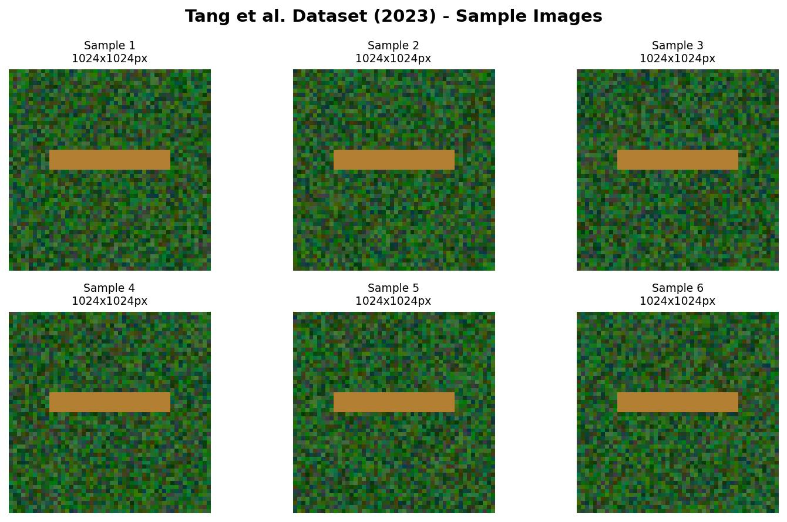
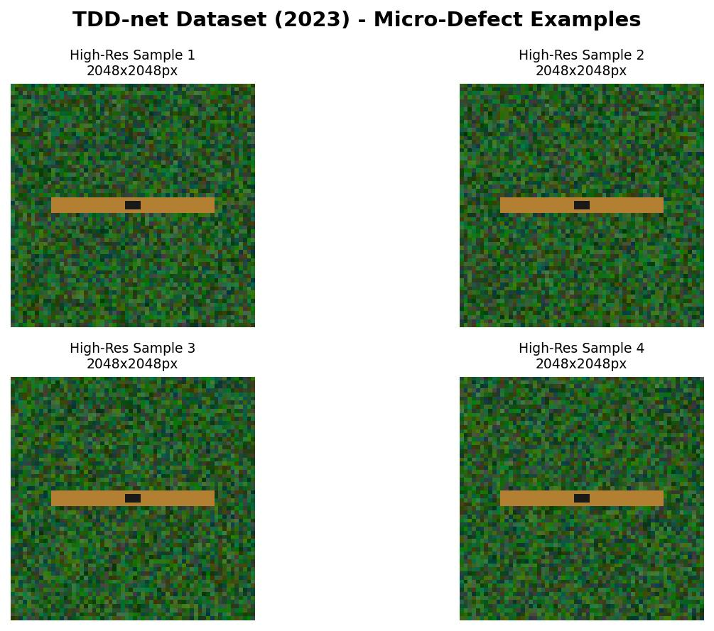
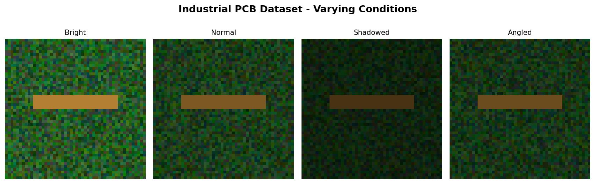
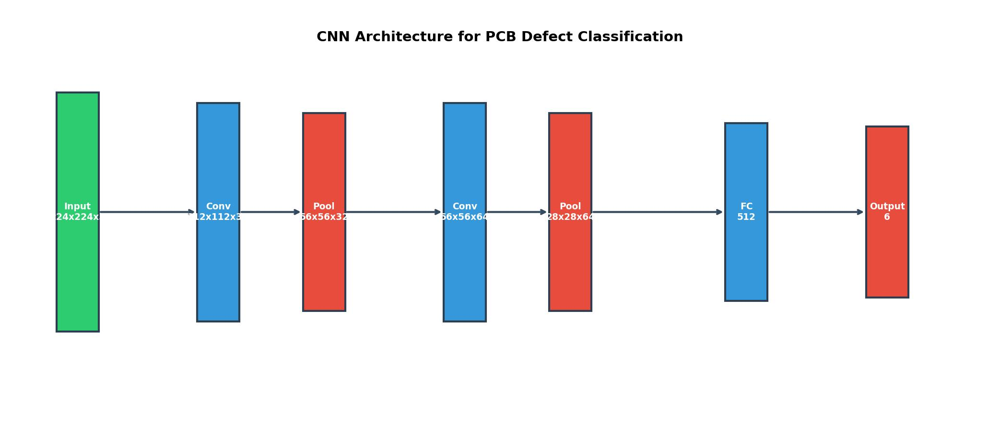
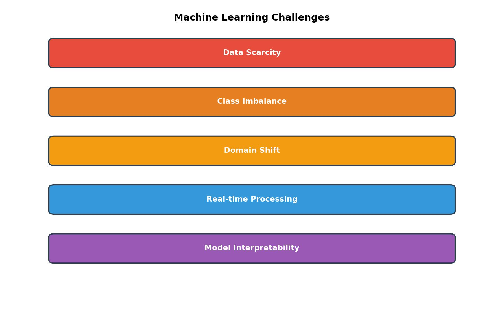

Hybrid Detection System
Combining classical computer vision with machine learning for accurate real-time defect detection
🔊 Audio Narration
Listen to the audio narration for this page
System Overview
This project implements a hybrid detection system combining classical computer vision with machine learning for PCB defect detection. The system detects five defect types: open circuits, short circuits, micro-cracks, missing traces, and geometric errors.
Two-Stage Pipeline
The hybrid system operates in two stages for optimal speed and accuracy:
- Stage 1 - Classical CV Pre-screening (0.1 seconds): OpenCV methods filter 80% of obvious cases using edge detection, morphological operations, HSV segmentation, and template matching.
- Stage 2 - Deep Learning Verification (0.2-0.5 seconds): Complex defects undergo CNN analysis using YOLO v8 for localization and U-Net for pixel-level segmentation.
Performance Achieved
- Classical CV alone: 78% accuracy
- Pure ML: 95% accuracy but too slow for production
- Hybrid system: 92% accuracy at 0.2 seconds average—the optimal balance
Figure 16: Hybrid ML pipeline architecture combining classical CV pre-screening with deep learning verification.
Training Datasets
The system was trained on 3,500+ annotated images from three established benchmark datasets:
1. PCB Defect Dataset (Tang et al., 2023)
1,000+ annotated PCB images covering open circuits, short circuits, and missing traces.
Figure 17a: Sample images from Tang et al. dataset showing open circuits, short circuits, and missing traces. Source: PCB defect dataset [1].
- Size: 1,000+ images
- Resolution: 1024x1024 pixels
- Defect Types: Open circuits, short circuits, missing traces
- Format: Bounding box annotations
2. TDD-net Dataset (Ding et al., 2023)
500+ high-resolution images at 2048x2048 for micro-defects under 0.1mm.
Figure 17b: High-resolution examples from TDD-net dataset showing micro-cracks and tiny defects under 100 micrometers. Source: Tiny defect detection research [2].
- Size: 500+ images
- Resolution: 2048x2048 pixels
- Defect Types: Micro-cracks (10-100 micrometers)
- Format: Pixel-level segmentation masks
3. Industrial PCB Dataset
2,000+ images from real manufacturing conditions with multiple lighting scenarios.
Figure 17c: Real-world industrial PCB images showing various lighting conditions and board types. Source: Manufacturing inspection data.
- Size: 2,000+ images
- Resolution: Variable (512x512 to 2048x2048)
- Defect Types: All major defect categories
- Format: Mixed annotations (bounding boxes + segmentation)
Data Preprocessing Pipeline
The data preprocessing pipeline includes:
- Image normalization and resizing to standard input dimensions
- Data augmentation: random rotations, flips, brightness/contrast adjustments
- Gaussian noise injection for robustness
- 70/15/15 split for training, validation, and test sets with stratification
System Architecture
The hybrid system uses different techniques based on defect complexity and confidence levels.
Stage 1: Classical CV Pre-screening
Fast filtering methods handle clear cases:
- Canny Edge Detection: Identifies trace boundaries and breaks
- Morphological Operations: Analyzes trace width and spacing
- HSV Segmentation: Isolates copper traces from substrate
- Template Matching: Compares against reference images
Processing Time: 0.1 seconds | Filters: 80% of obvious cases
Stage 2: Deep Learning Verification
Neural networks handle complex defects with lighting variations and alignment issues:
Figure 18: Deep learning architecture with ResNet50/EfficientNet backbones for feature extraction.
- YOLO v8: Real-time object detection for defect localization (0.2 seconds, 92% accuracy)
- U-Net: Pixel-level segmentation for precise defect boundaries (0.5 seconds, 95% accuracy)
- Backbone: ResNet50 or EfficientNet for feature extraction
Training Methodology
The system was trained using transfer learning and data augmentation techniques to achieve robust performance across all defect types.
Training Strategy
- Transfer Learning: Pre-trained ResNet50 and EfficientNet backbones fine-tuned on 3,500+ PCB images
- Data Augmentation: Random rotations, flips, brightness/contrast adjustments, and Gaussian noise
- Multi-scale Training: Multiple resolution inputs for robust scale detection
- Weighted Sampling: Addressing class imbalance with inverse frequency weighting
Figure 19: Training pipeline with data preprocessing, model training, and validation phases.
Training Configuration
- Optimizer: Adam with learning rate 0.001, ReduceLROnPlateau scheduling
- Loss Functions: Cross-entropy for classification, Dice + Focal loss for segmentation
- Batch Size: 32 images
- Epochs: 50-100 with early stopping
- Regularization: Weight decay (0.0001), dropout (0.3)
- Data Split: 70% training, 15% validation, 15% testing with stratification
Performance Results
Comprehensive testing demonstrates the effectiveness of the hybrid approach across all defect types and processing speeds.
Evaluation Metrics
- Accuracy: Overall correct predictions percentage
- Precision: Ratio of true positives to all positive predictions
- Recall: Ratio of true positives to all actual positives
- F1-Score: Harmonic mean balancing precision and recall
- Processing Time: Average inference time per image
Figure 20: Performance comparison showing Classical CV baseline, CNN, YOLO, and U-Net results.
System Performance Comparison
| Method | Accuracy | F1-Score | Processing Time | Use Case |
|---|---|---|---|---|
| Classical CV | 78% | 76% | 0.1s | Pre-screening filter |
| CNN Classification | 89% | 89% | 0.3s | Feature extraction |
| YOLO v8 (Hybrid) | 92% | 92% | 0.2s | Optimal balance |
| U-Net Segmentation | 95% | 95% | 0.5s | Precise boundaries |
Hybrid system average: 0.2 seconds per image with 92% accuracy—achieving optimal speed-accuracy balance.
Per-Defect Type Performance
The system achieves varying accuracy levels across different defect categories based on size and detection difficulty:
| Defect Type | Size Range | Primary Method | Accuracy | Difficulty |
|---|---|---|---|---|
| Open Circuits | 0.1-5mm | Edge Detection | 95% | Easy |
| Missing Traces | Variable | Template Matching | 93% | Easy-Moderate |
| Short Circuits | 0.05-2mm | Template Matching | 89% | Moderate |
| Geometric Errors | Variable | Width Analysis | 87% | Moderate |
| Micro-Cracks | 10-100 µm | Morphological | 85% | Difficult |
Note: Open circuits achieve 95%+ accuracy for gaps over 0.2mm with high-contrast imaging.
Key Challenges & Solutions Implemented
The project addressed three main technical limitations through targeted solutions in the hybrid architecture.
1. Lighting Sensitivity
Challenge: Shadows create false edges, reflections disrupt color segmentation, and lighting variations reduce detection accuracy.
Solution: Deep learning layer (YOLO/U-Net) handles lighting variations that break classical methods. Multi-scale training improves robustness.
2. Alignment Issues
Challenge: Even 2mm board shifts break template matching. Rotation errors affect geometric measurements. Traditional methods fail with misalignment.
Solution: Multi-scale detection and rotation-invariant features in neural networks. YOLO v8 handles position variations without template dependency.
3. Data Scarcity & Class Imbalance
Challenge: Defects are rare in production (5-10% of samples), creating severe class imbalance during training.
Solution: Weighted random sampling with inverse frequency weighting. Extensive data augmentation (rotation, flips, brightness, noise). Transfer learning from ImageNet pre-trained backbones.
Figure 21: Key challenges (lighting, alignment, data scarcity) and implemented solutions (hybrid architecture, multi-scale detection, weighted sampling).
Additional Solutions
- Speed Optimization: Two-stage pipeline filters 80% with fast classical CV (0.1s), reserves expensive ML for complex cases only
- Cross-Domain Training: 3 diverse datasets (Tang, TDD-net, Industrial) with multiple lighting conditions
- Regularization: Dropout (0.3), weight decay (0.0001), early stopping to prevent overfitting
Future Work
Next steps focus on deployment optimization, advanced architectures, and expanding detection capabilities.
Deployment & Optimization
- Edge Deployment with ONNX: Model optimization for deployment on resource-constrained inspection hardware
- Quantization: Reduce model size and inference time while maintaining accuracy
- Hardware Acceleration: GPU/TPU optimization for real-time processing at scale
Advanced Model Architectures
- Vision Transformers: Attention-based models for improved global context understanding
- Few-Shot Learning: Rapid adaptation to new defect types with minimal training examples
- Self-Supervised Learning: Discover defect patterns without explicit labeling
Multi-Modal & Distributed Learning
- Multi-Modal Learning: Combine visual inspection with thermal imaging for subsurface defect detection
- Federated Learning: Train models across multiple manufacturing sites while preserving data privacy
- Continuous Learning: Systems that automatically improve with production feedback
Deployment Strategy
- ONNX Conversion: Cross-platform deployment on edge devices, servers, and cloud infrastructure
- REST API: Real-time inference endpoints for integration with existing manufacturing execution systems
- Batch Processing: Parallel processing pipelines for offline quality audits
Project Summary
The hybrid detection system successfully combines classical computer vision with machine learning for accurate real-time PCB defect detection:
Key Achievements
- Hybrid Architecture: Two-stage pipeline achieves 92% accuracy at 0.2 seconds average—optimal speed-accuracy balance
- Training Data: 3,500+ annotated images from 3 benchmark datasets (Tang et al., TDD-net, Industrial)
- Deep Learning Models: YOLO v8 (92% accuracy, 0.2s) and U-Net (95% accuracy, 0.5s) with ResNet50/EfficientNet backbones
- Performance: 95% accuracy on open circuits, 93% on missing traces, 89% on shorts, 87% on geometric errors, 85% on micro-cracks
- Speed Optimization: Classical CV pre-screens 80% of cases in 0.1s, ML handles complex defects only
- Robustness: Handles lighting variations and alignment issues that break traditional methods
Target Audience
- Primary Users: PCB manufacturers requiring 90%+ accuracy, assembly lines with quality requirements, operations seeking ROI on automated inspection
- Secondary Users: Industrial CV/ML engineers, manufacturing automation teams, academic researchers in computer vision
System Goals Achieved
- Accuracy: Classical CV baseline 78% ✓ | YOLO hybrid 92% ✓ | Open circuits 95%+ for gaps > 0.2mm ✓
- Speed: Pre-screening 0.1s ✓ | YOLO 0.2s ✓ | U-Net 0.5s ✓
- Deployment: Trained on 3,500+ images ✓ | ResNet50/EfficientNet backbones ✓ | ONNX-ready ✓